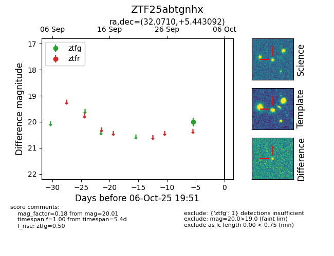

FINK: ZTF25abtgnhx
Lasair: ZTF25abtgnhx
ALeRCE: ZTF25abtgnhx
ZTF25abtgnhx (ztf,fink)
equatorial (ra, dec) = (32.0710,+5.44309)
galactic (l, b) = (155.4884,-52.50268)

last ztfg=20.01
1 ztfg detections